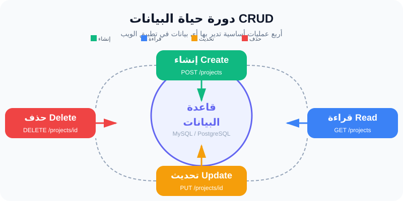

إدارة المشاريع (CRUD): بناء الدورة الكاملة للبيانات
"تطبيق الويب الحقيقي هو الذي يسمح للمستخدم بإنشاء وقراءة وتحديث وحذف بياناته."
ما هو الـ CRUD؟
الـ CRUD هو اختصار لأربع عمليات أساسية يقوم بها أي نظام في العالم:
1. Create: إنشاء مشروع جديد.
2. Read: عرض قائمة المشاريع.
3. Update: تعديل بيانات مشروع موجود.
4. Delete: حذف مشروع لم نعد نحتاجه.
في هذا الدرس، سنبني هذه الدورة الكاملة لجدول المشاريع في FlowPilot، ليمتلك المستخدم القدرة على إدارة مشاريعه بنفسه.
التحقق من البيانات (Validation)
أثناء عملية الـ Create، لا نسمح للمستخدم بإرسال بيانات خاطئة. مثلاً، لا يمكن إنشاء مشروع بدون "اسم". نستخدم في Laravel قواعد تحقق مثل 'name' => 'required|min:3' لضمان جودة البيانات.
مثال من حياتنا (السجل المدني)
- Create: تسجيل مولود جديد.
- Read: استخراج شهادة ميلاد لرؤية البيانات.
- Update: تغيير محل الإقامة في البطاقة.
- Delete: إلغاء قيد شخص في حالة الوفاة أو الخطأ.
مخططات توضيحية

مخطط CRUD
التطبيق العملي
الخطوة 1: إنشاء دالة العرض (Index)
في ProjectController، جلب المشاريع من قاعدة البيانات وإرسالها لـ React.
public function index() {
return Inertia::render('Projects/Index', [
'projects' => Project::all()
]);
}
الخطوة 2: إنشاء دالة الحفظ (Store)
public function store(Request $request) {
$attr = $request->validate(['name' => 'required']);
Project::create($attr);
return redirect()->route('projects.index');
}